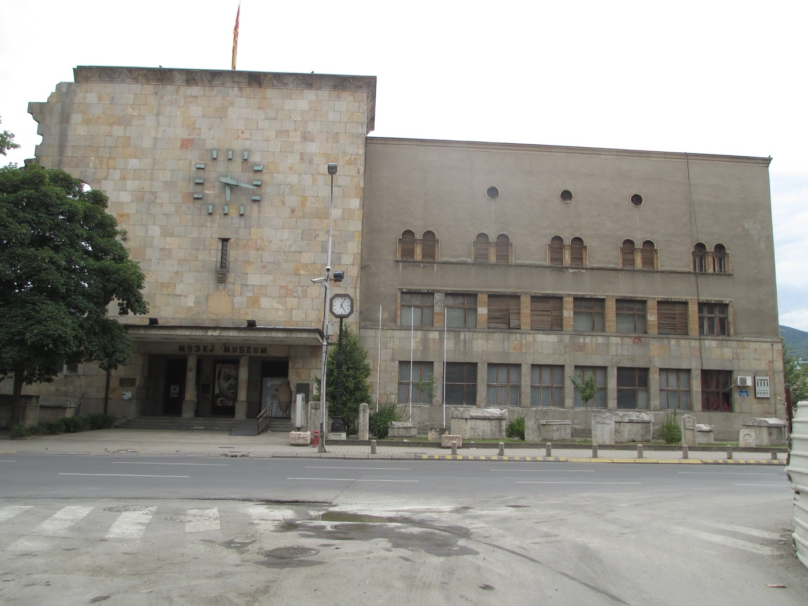
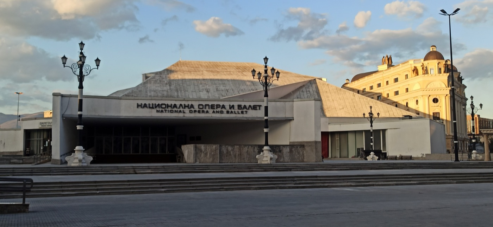

Un terremoto, un architetto giapponese, due alfabeti e un progetto da 136 statue: perché la città è fatta così.
Storia
Il 1963
Il 26 luglio 1963, alle 5:17 del mattino, un terremoto di magnitudo 6,1 colpì Skopje. La scossa durò venti secondi, le repliche continuarono fino alle 5:43.
Il bilancio: più di mille morti, fra tremila e quattromila feriti, oltre duecentomila senzatetto. Circa l'ottanta per cento della città era distrutto o inagibile.
Quello che successe dopo è il motivo per cui Skopje si chiamò per anni "la città della solidarietà". Tito mandò un messaggio e poi venne di persona. In pochi giorni trentacinque nazioni chiesero all'Assemblea generale dell'ONU di mettere Skopje all'ordine del giorno. Gli aiuti arrivarono da settantotto Paesi.
Kennedy ordinò al Pentagono e all'USAID di mandare personale, tende e case prefabbricate. Aiuti consistenti arrivarono anche dall'Unione Sovietica, e Chruščëv venne a Skopje di persona. La Jugoslavia era nel Movimento dei non allineati: a Skopje soldati americani e sovietici si strinsero la mano per la prima volta dalla fine della guerra.
Alla vecchia stazione ferroviaria, tagliata a metà e lasciata così, con l'orologio fermo sulle 5:17. Oggi è il Museo della Città di Skopje: p. 42.
La ricostruzione

L'Opera e Balletto: modernismo degli anni Ottanta, e dietro il marmo giallo del 2014.
Il centro di Skopje fu ricostruito secondo i piani dell'architetto giapponese Kenzo Tange, chiamato nella grande mobilitazione internazionale che seguì il terremoto.
L'idea era una "muraglia della città" — Gradski Zid — una fila di edifici lunghi e bassi a cingere il centro come una cinta muraria moderna. A ovest nacque il quartiere di Karpoš negli anni Settanta; a est, negli anni Ottanta, Aerodrom, progettato per ottantamila abitanti sul sito del vecchio aeroporto.
Sulla riva nord, dove sta la parte più antica, il Vecchio Bazar fu restaurato e tutto intorno si costruì basso, apposta per non rovinare la vista sulla fortezza. È una scelta che si vede ancora oggi, e che il progetto del 2014 ha in parte rovesciato.
Cemento a vista, volumi grossi, finestre profonde: il centro commerciale GTC, l'Opera, la posta centrale, l'università. Per molti anni sono stati considerati brutti; oggi sono studiati come uno dei migliori insiemi modernisti d'Europa.
Il 2014
Nel 2010 il governo del partito nazionalista VMRO-DPMNE annunciò un progetto per dare al centro "un aspetto più classico". In quattro anni furono costruite 136 strutture.
Il contesto era questo: un Paese indipendente da meno di vent'anni, con un nome contestato dalla Grecia, una forte minoranza albanese e poca iconografia nazionale condivisa. La risposta fu l'antichizzazione: rivendicare l'eredità dell'antica Macedonia, cioè Alessandro e Filippo, e costruirla in marmo.
Quanto sia costato non si sa con precisione, e la mancanza di trasparenza negli appalti è una delle accuse principali. Il governo disse 208 milioni di euro; l'inchiesta della rete di giornalisti BIRN arrivò a oltre 660 milioni; un'altra stima parla di 700 milioni di dollari.
Nel 2018 l'Accordo di Prespa chiuse la disputa con la Grecia: il Paese prese il nome di Macedonia del Nord e la Grecia ritirò il veto all'ingresso nella NATO. Le statue restarono dov'erano, con qualche targa in più.
È un argomento che divide ancora i macedoni, e le opinioni non seguono linee semplici. Chiedete, non giudicate: quasi tutti hanno una posizione e quasi nessuno la trova ovvia.
Chi ci vive
Il Vardar non separa solo il marmo dal bazar. A sud del fiume si parla soprattutto macedone, lingua slava che si scrive in cirillico. A nord, nella parte alta del bazar e nel comune di Čair, si parla soprattutto albanese, che si scrive in alfabeto latino.
Gli albanesi sono circa un quinto della popolazione del Paese e la legge riconosce l'uso ufficiale della loro lingua nei comuni dove superano il venti per cento, e in certi casi anche a livello centrale. Per questo molti cartelli sono in due lingue e due alfabeti.
Ci sono poi i rom, i turchi, i serbi. Šuto Orizari, a nord della città, è uno dei pochi comuni al mondo amministrati da una maggioranza rom, con il romanì fra le lingue ufficiali locali.
La Chiesa ortodossa macedone celebra il Natale il 7 gennaio e la Pasqua secondo il calendario giuliano. L'islam segue il calendario lunare. È il motivo per cui a dicembre la città si accende tardi: la festa grossa dell'inverno qui è il Capodanno, non il 25 dicembre.
Non chiamatela "Macedonia" e basta davanti a un greco, e non dite "è tutta la stessa cosa" davanti a un macedone o a un albanese. Sono questioni ancora vive: si ascolta più di quanto si parli.
Una persona
Anjezë Gonxhe Bojaxhiu nacque a Skopje nel 1910, da famiglia albanese cattolica. La città allora era ottomana: sarebbe diventata serba due anni dopo, poi jugoslava, poi macedone, senza che lei si spostasse.
Partì a diciotto anni per l'Irlanda e poi per l'India, e non tornò quasi mai. Il mondo la conosce come Madre Teresa di Calcutta; a Skopje è semplicemente la cittadina più famosa, rivendicata insieme da macedoni e albanesi — una delle poche cose su cui le due comunità non discutono.
La chiesa del Sacro Cuore in cui fu battezzata fu distrutta dal terremoto del 1963. Dove sorgeva c'è oggi la casa memoriale: ingresso gratuito, chiusa il lunedì, e per i gruppi serve prenotare. La scheda è a p. 41.
Il nome Gonxhe in albanese vuol dire "bocciolo di rosa". Bojaxhiu viene dal turco boyacı, "imbianchino": suo padre era un commerciante, e il cognome conserva il mestiere di famiglia e cinque secoli di storia ottomana in una parola sola.
La lingua
Mezz'ora di attenzione e i cartelli diventano leggibili. Molte lettere sono uguali alle nostre, alcune suonano diverse da come sembrano, poche sono davvero nuove.
Partite dai nomi che già conoscete: sull'autobus c'è scritto ВОДНО, sul cartello МАТКА, sull'insegna ЌЕБАПИ. Dopo tre o quattro parole indovinate, il resto viene da sé.
La lingua
Përshëndetje — buongiorno · Faleminderit — grazie · Sa kushton? — quanto costa? · Mirupafshim — arrivederci.
Poco: nel centro e nella ristorazione l'inglese è diffuso, soprattutto fra i giovani. Ma blagodaram detto al momento giusto cambia l'umore di una conversazione, e nel bazar cambia anche il prezzo.
Il calendario
È la domanda che ci si porta dietro per tutto il viaggio, ed è la chiave per capire l'inverno macedone.
La Chiesa ortodossa macedone segue il calendario giuliano per le feste: il Natale cade il 7 gennaio. La festa civile più sentita dell'inverno è il Capodanno, e il periodo forte va dalla fine di dicembre alla metà di gennaio.
Di conseguenza la città si accende tardi. Per il 2026 il Comune ha bandito l'illuminazione di Piazza Macedonia con l'obbligo di accenderla entro il 15 dicembre e di toglierla fra il 15 e il 25 gennaio 2027: albero di tredici metri, cervo luminoso, slitta per le foto, per circa settantatremila euro. Il bazar natalizio su ulica Makedonija apre il 22 dicembre e chiude il 6 gennaio.
Il 4-7 dicembre, quindi, la piazza è ancora spoglia. Non è una disgrazia: è il calendario di un Paese che festeggia in un altro momento.
19 dicembre: san Nicola (Sveti Nikola), una delle slava di famiglia più diffuse. 1 gennaio: Capodanno. 7 gennaio: Natale ortodosso. 19 gennaio: Epifania, con il tuffo nell'acqua gelata per riprendere la croce. Nessuna di queste cade nel nostro viaggio.
Nella prima settimana di dicembre Skopje non ha né mercatini né turisti. Il bazar è vuoto, Matka è deserta, nei ristoranti c'è posto anche in sei e i prezzi sono quelli di sempre. È la città vera, non la vetrina.
Crediti fotografici
Foto da Wikimedia Commons, pubblicate con licenze Creative Commons o in pubblico dominio. Mappe: Esri, HERE, Garmin e i contributori di OpenStreetMap. Dati stradali: OpenStreetMap.
Appunti